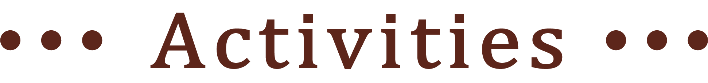

terrace
2021/2/17,
the number of
first member is 8.
2021/6/1,
the number of
“terrace” member is 39.
Thank you very much.
カフェだけじゃない terrace へようこそ
参加希望、質問、相談は
こちら
terrace
2021/2/17,
the number of
first member is 8.
2021/6/1,
the number of
“terrace” member is 39.
Thank you very much.
カフェだけじゃない
terraceへようこそ
参加希望、質問、相談は
こちら

”カフェ”だけじゃない
terraceのConceptは、「人、Café、成長」です。
Caféを通じて人と人との交流を、今の時期だからこそもっと大切にして、
その中で成長していくみなさんを「照らす」場所です。
terraceのConceptは、
「人、Café、成長」です。
Caféを通じて人と人との交流を、
今の時期だからこそもっと大切にして、
その中で成長していくみなさんを
「照らす」場所です。
.png)
人
×
.png)
Cafe
×
.png)
成長


設立する際の思い
みんなの声から生まれました
『コロナ禍になってから、つながりができない』
『カフェ好きだけど、徳島県のカフェ知らない』
『カフェ好きだけど、一緒に行く友人がいない』
『大学生になったから、何か挑戦してみたい！』
『コロナ禍になってから、
つながりができない』
『カフェ好きだけど、
徳島県のカフェ知らない』
『カフェ好きだけど、
一緒に行く友人がいない』
『大学生になったから、
何か挑戦してみたい！』

terraceは、そんな声に答えます
カフェを通じてつながりができる。
カフェ好きが集まるから、コアなカフェを知れるかも。
カフェ好きが集まるから、カフェ友が出来る。
カフェをインタビューしたり、コラボ企画をしたり、
SNSの発信をしたり、カフェマップを作ったり、、、
他では経験できないことに挑戦できる。
カフェを通じてつながりができる。
カフェ好きが集まるから、
コアなカフェを知れるかも。
カフェ好きが集まるから、
カフェ友が出来る。
カフェをインタビューしたり、
コラボ企画をしたり、
SNSの発信をしたり、
カフェマップを作ったり、、、
他では経験できないことに挑戦できる。

活動内容
活動内容は、メンバーのみんながやりたい！と思ったことを
どんどんイベントや、企画としてやっています！
ここに書かれていないものでもやりたいものあれぜひ教えてくださいね。
活動内容は
メンバーのみんながやりたい！と思ったことを
どんどんイベントや、
企画としてやっています！
ここに書かれていないものでも
やりたいものあれぜひ教えてくださいね。

Café巡り
月に１回、
３～5人のグループで
投票して決めたCaféへ！
むすびCafé
月に１回、
terraceメンバー全員で
集まって親睦＆イベント！
SNS発信
Caféに行くたび
Instagramに写真や
お店情報を発信！

イベント
Event

お菓子作り
不定期
いろいろなお菓子を
メンバーと一緒に作ろう！
季節イベント
春は、花見
夏は、BBQ
秋は、ハロウィン
冬は、クリスマス

新入生サポート
4月
新入生に
PC設定や留学、履修登録
などなど何でも相談
企画中
Planning

Caféコラボ企画
インタビューした
Caféと連携して、
コラボメニューを作成！
自分の好きなスイーツを、
自分の好きなドリンクを、
自分の好きなCaféで、
形になる夢のような企画。
商品開発を将来してみたい！
お菓子作り好きを発揮したい！
連携において連絡などの
社会人基礎力を身につけたい！
などなど素敵な経験をお届け。
Caféサブスク
定価で月に何度も
Caféにいけるサブスク！
Caféの交渉など
１から一緒に作ることで
社会人基礎力を身につけませんか？
部長
.png)
うめちゃん
知らなかったCaféに行くきっかけになり、
新入生、先輩と上下のつながりも出来ました！
英語が好きな新入生にオンライン留学や、
勉強方法を教え、新たな挑戦のお手伝いも出来て
設立して本当に良かったと思っています。
皆さんの参加をお待ちしております！
知らなかったCaféに行くきっかけになり、
新入生、先輩と上下のつながりも出来ました！
英語が好きな新入生にオンライン留学や、勉強方法を教え、
新たな挑戦のお手伝いも出来て
設立して本当に良かったと思っています。
皆さんの参加をお待ちしております！
幹部
.png)
けんけん
お店の人にインタビューすることで、
店の良さを知ることはもちろん、
自分のコミュニケーション能力を知れたり、
今までやったことない経験をすることで、
自信を持つことが出来ました！
terraceを自分の新たな挑戦の場として、一緒に活動しませんか？
お店の人にインタビューすることで、
店の良さを知ることはもちろん、
自分のコミュニケーション能力を知れたり、
今までやったことない経験をすることで、
自信を持つことが出来ました！
terraceを自分の新たな挑戦の場として、一緒に活動しませんか？
幹部
.png)
てんてん
計画したイベントが
ことごとくコロナのせいで中止になったのにも関わらず
仲良いメンバーがすぐに出来ました！
terraceではカフェを通じて色んなことが出来るので、
皆さんの「やってみたい」を一緒に形にします！
皆さんのご参加お待ちしてます！
計画したイベントがことごとくコロナのせいで中止になったのにも関わらず
仲良いメンバーがすぐに出来ました！
terraceではカフェを通じて色んなことが出来るので、
皆さんの「やってみたい」を一緒に形にします！
皆さんのご参加お待ちしてます！
幹部
.png)
あゆりん
私はカフェに行くのが好きなので、
terraceに入ってメンバーと一緒に
色々なカフェを巡りたい！と思い
terraceに入りました。交流会なども行っており、
学部学年を超えて仲良くなれます！
terraceに入らなければ出会えない人たちと出会い、
大学生活を満喫しましょう♪
私はカフェに行くのが好きなので、
terraceに入ってメンバーと一緒に色々なカフェを巡りたい！と思いterraceに入りました。
交流会なども行っており、
学部学年を超えて仲良くなれます！
terraceに入らなければ出会えない人たちと出会い、
大学生活を満喫しましょう♪
新入生
.png)
たみぃ
terraceはとても居心地が良く、
カフェに行って大学生活の相談や
お菓子作りについての話をして楽しく過ごしています。
terraceを通して知ったカフェを
友達とも行って楽しめる2度おいしいサークルです！
terraceはとても居心地が良く、
カフェに行って大学生活の相談やお菓子作りについての話をして楽しく過ごしています。
terraceを通して知ったカフェを友達とも行って楽しめる2度おいしいサークルです！
新入生
.png)
しょーこ
入学してまもない頃に親身になって
いろんな相談に乗っていただきました。
アットホームな雰囲気で
先輩方とも楽しくお話できたため入りました。
これからの活動が楽しみです！
入学してまもない頃に親身になっていろんな相談に乗っていただきました。
アットホームな雰囲気で先輩方とも楽しくお話できたため入りました。
これからの活動が楽しみです！
.png)
.png)
Instagram @tokucafe_terrace
Twitter @terrace54461018